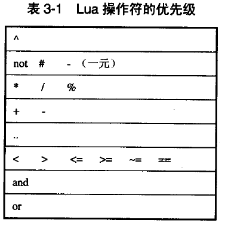

表達式
+ - * / ^ (指數 平方) % (x-x%0.01 --保留2位有效數字) - (負號) < <= > >= == ~= （對於 table userdata 函數 lua是比較的 引用(是否指向同一個實例) 而非值） and or not //連接字符串 .. 
table 構造
//構造一個 空 table
a = {}
//構造一個 table days[1]為 "Sunday" days[2]為 "Monday" ...
days = {"Sunday","Monday","Tuesday",} --最後一個 , 可有 可無
days = {0 = "Sunday","Monday","Tuesday"} --索引以 0 開始
//構造一個 table pos.x為10 pos.y為20
pos = {x=10,y=20}
role = {name="test";x=10,y=20} --以可使用 ; 分隔
//{} 嵌套 構造
role ={name="illusive man",pos={x=10,y=20}}
print(role.name)
print(role.pos.x)
print(role.pos.y)
語句
lua 大多語句 同 c
多重 賦值(lua 先將右邊全部 求值 之後 賦給 左便對應 變量)
a,b = 1,2 a,b = b,a --swap a,b = 1,2,3 a = 1,2 (對於 左右兩邊 數量不等 忽略 右邊多出的值 為右邊缺少的值使用nil)
局部變量
//局部變量訪問 快於 全局變量 //定義一個局部變量 以加快對全局變量的 訪問 local foo = foo //定義一個局部變量 local i =1 (變量超出 局部自動 釋放) 局部變量 可以在一個 if while for function ...中 亦可使用 do end 定義一個 程序塊 do local a=1 end print(a) --nil
控制結構
//lua 不支持 switch 只能 elseif elseif... if 判斷式 then ... elseif 判斷式 then ... elseif 判斷式 then ... else ... end //while循環 while 判斷式 do ... end //循環 直到 判斷式為 真(至少被執行1次) repeat ... until 判斷式 (until 的判斷式 已然在 此程序塊內[判斷式 可訪問 repeat塊中的局部變量]) //for 從 exp1 循環到 exp2 每次步長為 exp3 //exp3 不寫 默認 為 1 //exp1 2 3 在循環開始一次性求值 不能改變其值 否則 發生未定義行為 for exp1,exp2,exp3 do ... end for i=10,1,-1 do ... end //for用於泛型 v為值 k為key iterator 為迭代器函數 for k,v in iterator do ... end days = {"Sunday","Momday","Tuesday","Wednesday","Tuesday","Friday","Saturday"} for k,v in pairs(days) do --pairs為一個 訪問數組的 迭代器 k可以省略 print(v) print(k) end //lua 不支持 continue break return